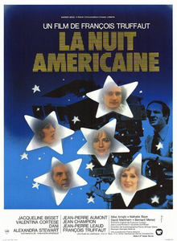

François Truffaut
1973
115 minutes
This is a Truffaut film about making films. Yeah, it's meta. It's also very good and very funny without being "wacky". It's a movie about a troubled film production. Seemingly everything that can go wrong does go wrong. The film follows the quite international cast and crew and all their personal dramas as they all struggle to make this film. A good chunk of them are sleeping with each other or suspect each other of doing so. Tensions are high. One of the actresses (Jacqueline Bisset) is recovering from a recent nervous breakdown. Another is pregnant and starting to show, which is only discovered when they need her to wear a swimsuit for a pool scene. Jean-Pierre Léaud is in it playing the usual sort of thoughtless childish schmuck he always seems to play. One actress has a drinking problem and is barely able to remember her lines and get through her scenes without extensive prompting. Another actor has a busybody wife who is constantly hanging around the set trying to make sure he isn't having an affair with one of his co-workers. And, charmingly, Truffaut plays a fictionalized version of himself as the director trying to keep the wheels on long enough to limp to the finish line and be done with the film.
There's magic in this from the first shot, which initially appears to be a regular shot of a street scene and a man emerging from the metro, but then the director stops the reaction and everything is revealed to be a very choreographed scene involving dozens of extras that all need to be reset to reshoot the scene again since the first take wasn't quite right. It immediately gives you an idea of how careful and fussy a director may be about something that initially seems very straightforward.
This first scene reminds you of a very funny short experimental film called The Girl Chewing Gum, which was made three years after this film came out. That film has about 12 minutes of actual street footage shot in London accompanied by a voice-over of the "director" as he directs the action and camera movement. The director barks orders at the passers-by, seeming to tell them what to do as they are doing it. This crosses the line and spirals to absurdity quickly when he tells the camera to point upward at a clock and starts giving orders to the clock and the pigeons. ("I want the long hand to move one revolution every hour and the short hand to move at a rate of one revolution every twelve hours.") You'll certainly be revisiting that film after watching this one.
The phrase "day for night" refers to a filming technique using camera filters where footage shot during the daytime can be made darker so that it appears to be shot at night (with varying degrees of success as seen in many cheap B-movies that you've seen on Mystery Science Theater 3000). The French term for this is nuit americain, which is the French title for this film. "Day for Night" is also the title of a very catchy song by an electronic music group from Sheffield called Moloko, which is the Russian word for "milk". They were mostly active during the 1990s during the golden age of trip-hop--a staple of your late night radio show. This song is now going to be stuck in your head for the rest of the day. That song also has a nice and spooky video that you're going to have an itch to rewatch.
Good films make you glad you watched the film. Really good films not only make you glad you watched them but also inspire you and give you homework.
Time to choose something different: